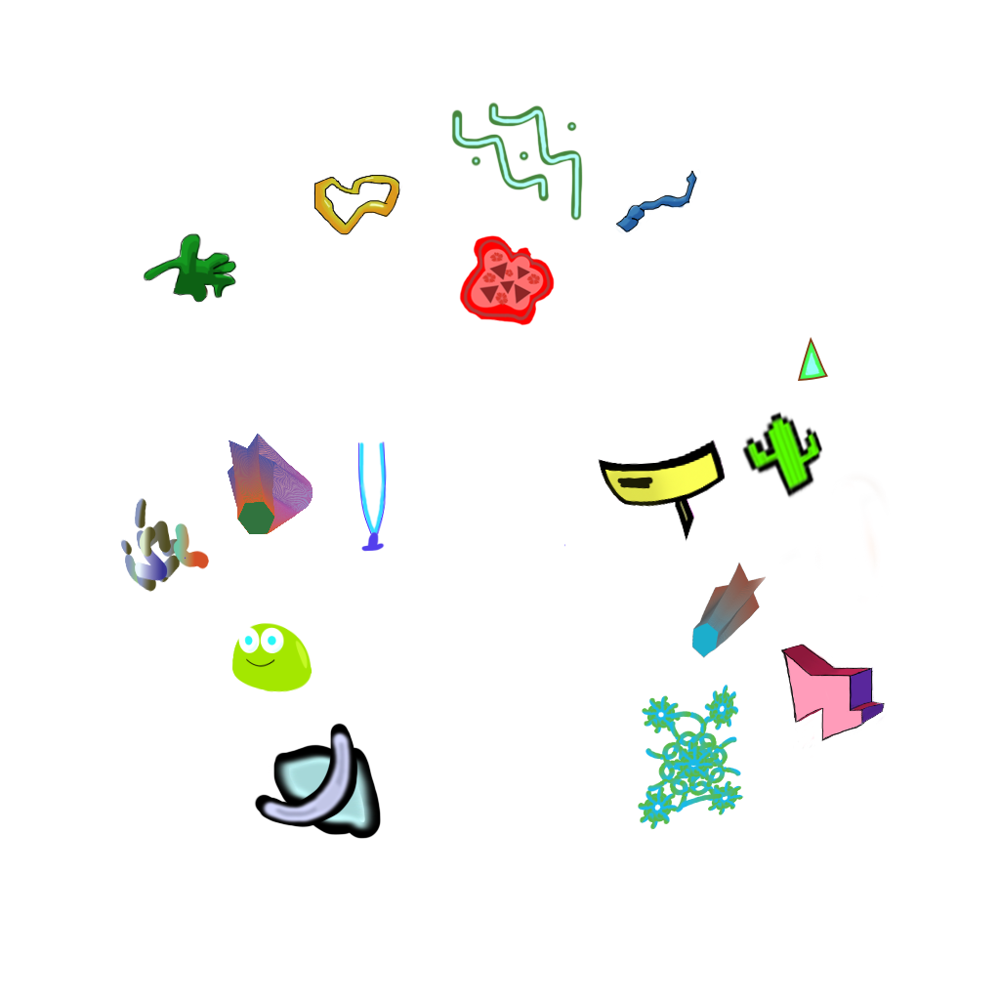

PNG file used for filter (pictured above)
I just decided to settle with an Instagram filter to be right on schedule and it's easier for me to do for this assignment. I mean...people are using the filter of the art that YOU made and they are interacting with it, which I thought it was easier for me to get done faster than creating a PC game especially if the deadline is around the corner. I never thought of it until I read the instructions of the assignment during the week of the deadline. So I settled with doing simple designs like making cute stickers for the viewer to interact. I don't know what to make though until I saw Instagram user snebtor's post of some cool designs he made for the new year and a few simple filters on Google images so I did just that. I didn't put a lot of effort because the deadline was this week and so I try to make it as pretty as possible even if it looks too simple and rushed. I made those designs on Illustrator and Photoshop and I finished designing the filter on Photoshop. Go check out this tutorial here to see how I did it.